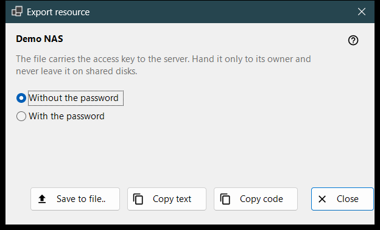
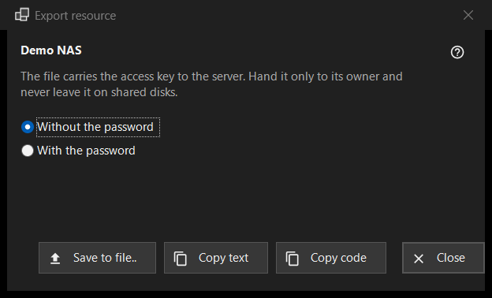

Export resource
What this is for
Prepares the settings of one SFTP server so that another computer or a phone can import them. It opens from «Export..» in the «More» menu of the resources list and needs a selected resource; a folder shared by Share Manager is exported from Share Manager instead.


In this order
- Read the warning under the resource name.
- Choose «Without the password» (the default) or «With the password».
- Press «Save to file..», or copy the settings as text or as a short code.
- Hand the result only to its owner.
The elements
The warning
The line under the name says that the file carries the access key to the server: hand it only to its owner and never leave it on shared disks. It applies to the file, the copied text and the code alike.
Without or with the password
«Without the password» is selected at the start. «With the password» is enabled only when the saved password can be read back; otherwise the hint «The password is not saved - the file will be without one.» is shown. The password is decrypted in memory for the export and goes nowhere else.
Save, copy text, copy code
«Save to file..» writes a .fmscfg file through a save dialog; the writer refuses FAT or exFAT disks, network disks and folders that other users can change, and never leaves a half-written file. «Copy text» puts the settings document on the clipboard and «Copy code» a short code with the same content. Both are copied with the privacy markers (no clipboard history, no cloud sync). The status line shows the result.
What can be exported
Only an SFTP server whose key the viewer already remembers. The window opens in any case, and a refusal appears in the status line when you press a button: a network folder (SMB) cannot be described by this file; the server key is not remembered (open the resource once and confirm the key); the resource has no address to hand over; the folder is written in a way the file does not accept (fix it through «Edit..»).